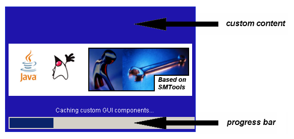

Package org.sm.smtools.application.util
Class JSplashScreen
java.lang.Object
java.awt.Component
java.awt.Container
java.awt.Window
javax.swing.JWindow
org.sm.smtools.application.util.JSplashScreen
- All Implemented Interfaces:
java.awt.image.ImageObserver,java.awt.MenuContainer,java.io.Serializable,javax.accessibility.Accessible,javax.swing.RootPaneContainer
public final class JSplashScreen
extends javax.swing.JWindow
The
JSplashScreen class provides a splash screen for Swing-based GUIs.
Note that a valid I18NL10N database must be available!
When visible, the splash screen looks as follows:

As can be seen, there are three main areas:
- An area where custom content can be shown.
-
The custom content is passed as a
JLabelto theJSplashScreenobject via its constructor. Typically, an image is provided; for visual coherence, we suggest using aJLabel/image with a maximum width of 500 pixels.
-
The custom content is passed as a
- The common SMTools area (with the hammer and the spanner).
- An area containing custom status messages and a progress bar.
-
The caller updates the status message by invoking the
setStatusMessage(String)method.
-
The caller updates the status message by invoking the
When the splash screen is shown, an optional MP3 soundfile can be played.
Note that this class cannot be subclassed!
- Version:
- 26/06/2018
- Author:
- Sven Maerivoet
- See Also:
JStandardGUIApplication,MP3Player, Serialized Form
-
Nested Class Summary
Nested classes/interfaces inherited from class javax.swing.JWindow
javax.swing.JWindow.AccessibleJWindowNested classes/interfaces inherited from class java.awt.Window
java.awt.Window.AccessibleAWTWindow, java.awt.Window.TypeNested classes/interfaces inherited from class java.awt.Container
java.awt.Container.AccessibleAWTContainerNested classes/interfaces inherited from class java.awt.Component
java.awt.Component.AccessibleAWTComponent, java.awt.Component.BaselineResizeBehavior, java.awt.Component.BltBufferStrategy, java.awt.Component.FlipBufferStrategy -
Field Summary
Fields inherited from class javax.swing.JWindow
accessibleContext, rootPane, rootPaneCheckingEnabledFields inherited from class java.awt.Component
BOTTOM_ALIGNMENT, CENTER_ALIGNMENT, LEFT_ALIGNMENT, RIGHT_ALIGNMENT, TOP_ALIGNMENTFields inherited from interface java.awt.image.ImageObserver
ABORT, ALLBITS, ERROR, FRAMEBITS, HEIGHT, PROPERTIES, SOMEBITS, WIDTH -
Constructor Summary
Constructors Constructor Description JSplashScreen(javax.swing.JLabel customSplashScreenContent, java.io.InputStream mp3SoundInputStream)Constructs aJSplashScreenobject with a specified content. -
Method Summary
Modifier and Type Method Description booleanimageUpdate(java.awt.Image img, int flags, int x, int y, int w, int h)Prevents flickering when painting.booleanisAvailable()Returns whether or not theJSplashScreenobject is available.voidsetStatusMessage(java.lang.String statusMessage)Changes the status message.voidsetStatusMessageWaitTime(int statusWaitTime)Sets the delay that is forced each time the status message is changed.Methods inherited from class javax.swing.JWindow
addImpl, createRootPane, getAccessibleContext, getContentPane, getGlassPane, getGraphics, getLayeredPane, getRootPane, getTransferHandler, isRootPaneCheckingEnabled, paramString, remove, repaint, setContentPane, setGlassPane, setLayeredPane, setLayout, setRootPane, setRootPaneCheckingEnabled, setTransferHandler, update, windowInitMethods inherited from class java.awt.Window
addNotify, addPropertyChangeListener, addPropertyChangeListener, addWindowFocusListener, addWindowListener, addWindowStateListener, createBufferStrategy, createBufferStrategy, dispose, getBackground, getBufferStrategy, getFocusableWindowState, getFocusCycleRootAncestor, getFocusOwner, getFocusTraversalKeys, getIconImages, getInputContext, getListeners, getLocale, getModalExclusionType, getMostRecentFocusOwner, getOpacity, getOwnedWindows, getOwner, getOwnerlessWindows, getShape, getToolkit, getType, getWarningString, getWindowFocusListeners, getWindowListeners, getWindows, getWindowStateListeners, isActive, isAlwaysOnTop, isAlwaysOnTopSupported, isAutoRequestFocus, isFocusableWindow, isFocusCycleRoot, isFocused, isLocationByPlatform, isOpaque, isShowing, isValidateRoot, pack, paint, processEvent, processWindowEvent, processWindowFocusEvent, processWindowStateEvent, removeNotify, removeWindowFocusListener, removeWindowListener, removeWindowStateListener, setAlwaysOnTop, setAutoRequestFocus, setBackground, setBounds, setBounds, setCursor, setFocusableWindowState, setFocusCycleRoot, setIconImage, setIconImages, setLocation, setLocation, setLocationByPlatform, setLocationRelativeTo, setMinimumSize, setModalExclusionType, setOpacity, setShape, setSize, setSize, setType, setVisible, toBack, toFrontMethods inherited from class java.awt.Container
add, add, add, add, add, addContainerListener, applyComponentOrientation, areFocusTraversalKeysSet, doLayout, findComponentAt, findComponentAt, getAlignmentX, getAlignmentY, getComponent, getComponentAt, getComponentAt, getComponentCount, getComponents, getComponentZOrder, getContainerListeners, getFocusTraversalPolicy, getInsets, getLayout, getMaximumSize, getMinimumSize, getMousePosition, getPreferredSize, invalidate, isAncestorOf, isFocusCycleRoot, isFocusTraversalPolicyProvider, isFocusTraversalPolicySet, list, list, paintComponents, print, printComponents, processContainerEvent, remove, removeAll, removeContainerListener, setComponentZOrder, setFocusTraversalKeys, setFocusTraversalPolicy, setFocusTraversalPolicyProvider, setFont, transferFocusDownCycle, validate, validateTreeMethods inherited from class java.awt.Component
add, addComponentListener, addFocusListener, addHierarchyBoundsListener, addHierarchyListener, addInputMethodListener, addKeyListener, addMouseListener, addMouseMotionListener, addMouseWheelListener, checkImage, checkImage, coalesceEvents, contains, contains, createImage, createImage, createVolatileImage, createVolatileImage, disableEvents, dispatchEvent, enableEvents, enableInputMethods, firePropertyChange, firePropertyChange, firePropertyChange, firePropertyChange, firePropertyChange, firePropertyChange, firePropertyChange, firePropertyChange, firePropertyChange, getBaseline, getBaselineResizeBehavior, getBounds, getBounds, getColorModel, getComponentListeners, getComponentOrientation, getCursor, getDropTarget, getFocusListeners, getFocusTraversalKeysEnabled, getFont, getFontMetrics, getForeground, getGraphicsConfiguration, getHeight, getHierarchyBoundsListeners, getHierarchyListeners, getIgnoreRepaint, getInputMethodListeners, getInputMethodRequests, getKeyListeners, getLocation, getLocation, getLocationOnScreen, getMouseListeners, getMouseMotionListeners, getMousePosition, getMouseWheelListeners, getName, getParent, getPropertyChangeListeners, getPropertyChangeListeners, getSize, getSize, getTreeLock, getWidth, getX, getY, hasFocus, isBackgroundSet, isCursorSet, isDisplayable, isDoubleBuffered, isEnabled, isFocusable, isFocusOwner, isFontSet, isForegroundSet, isLightweight, isMaximumSizeSet, isMinimumSizeSet, isPreferredSizeSet, isValid, isVisible, list, list, list, paintAll, prepareImage, prepareImage, printAll, processComponentEvent, processFocusEvent, processHierarchyBoundsEvent, processHierarchyEvent, processInputMethodEvent, processKeyEvent, processMouseEvent, processMouseMotionEvent, processMouseWheelEvent, remove, removeComponentListener, removeFocusListener, removeHierarchyBoundsListener, removeHierarchyListener, removeInputMethodListener, removeKeyListener, removeMouseListener, removeMouseMotionListener, removeMouseWheelListener, removePropertyChangeListener, removePropertyChangeListener, repaint, repaint, repaint, requestFocus, requestFocus, requestFocus, requestFocus, requestFocusInWindow, requestFocusInWindow, requestFocusInWindow, revalidate, setComponentOrientation, setDropTarget, setEnabled, setFocusable, setFocusTraversalKeysEnabled, setForeground, setIgnoreRepaint, setLocale, setMaximumSize, setMixingCutoutShape, setName, setPreferredSize, toString, transferFocus, transferFocusBackward, transferFocusUpCycleMethods inherited from class java.lang.Object
clone, equals, getClass, hashCode, notify, notifyAll, wait, wait, wait
-
Constructor Details
-
JSplashScreen
public JSplashScreen(javax.swing.JLabel customSplashScreenContent, java.io.InputStream mp3SoundInputStream)Constructs aJSplashScreenobject with a specified content.When a
JSplashScreenobject should be created, but not be available, the caller should specifynullas the value for thecustomSplashScreenContent.The caller should use
nullas the value for the MP3soundFilenameparameter if no MP3 soundfile is to be played.Important remark:
- If the specified MP3 soundfile could not be played, it is ignored.
- Parameters:
customSplashScreenContent- the custom content (typically an image with a maximum dimension of 460x130 pixels)mp3SoundInputStream- anInputStreamcontaining the MP3 sound to be played (usenullfor no sound)- See Also:
isAvailable()
-
-
Method Details
-
isAvailable
public boolean isAvailable()Returns whether or not theJSplashScreenobject is available.This method returns
falsewhen no custom content was specified to the constructor.- Returns:
truewhen theJSplashScreenobject is available,falseotherwise
-
setStatusMessage
public void setStatusMessage(java.lang.String statusMessage)Changes the status message.- Parameters:
statusMessage- the status message
-
setStatusMessageWaitTime
public void setStatusMessageWaitTime(int statusWaitTime)Sets the delay that is forced each time the status message is changed.- Parameters:
statusWaitTime- the time to wait (in milliseconds)- See Also:
setStatusMessage(String)
-
imageUpdate
public boolean imageUpdate(java.awt.Image img, int flags, int x, int y, int w, int h)Prevents flickering when painting.- Specified by:
imageUpdatein interfacejava.awt.image.ImageObserver- Overrides:
imageUpdatein classjava.awt.Component
-